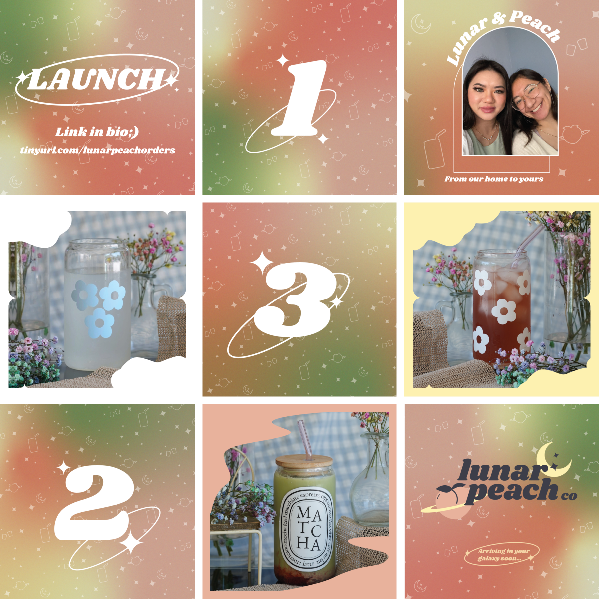

vuksavanna@berkeley.edu
vuksavanna@berkeley.edu
Logo & Branding Guide
Lead Desginer
1 Month
Adobe Illustrator
I created the San José rebranding project for my midterm project in UC Berkekeley's Graphic Design Principles course. My hometown of San José, California has a rich history and diverse groups of communities living eithin our city.
Created a fresh & simple look for LunarPeach's branding and created graphics for their Instagram business launch.
Like many of the cities located within the Bay Area, San José was originally Ohlone land. The Muwekma Ohlone tribe inhabited the area up until the 1800s when Spaniards arrived and built missionaries. During the period of the goldrush, it became established as a place rich in mercury or ‘quicksilver,’ and would go on to become the first capital of California a few years later in 1848. And before it became the tech hub that it is today, San José’s Silicon Valley was ‘Valley of Heart’s Delight’. It was known for the acres of orchards that formed rows into the soil in every direction. At one point it held 7,829,677 fruit trees, over seven times the current population. During this time, Cesar Chaves would champion the farmworkers movement with the United Farm Workers labor union. It wasn’t until very recently in the 1970s that San José became the center of the technology scene.
I also created graphics for their Instagram business launch.
